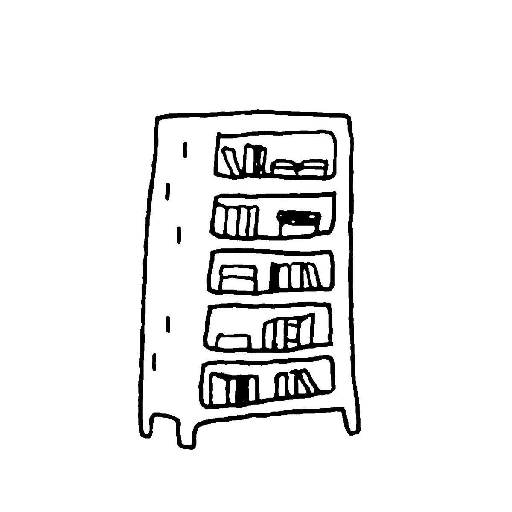

...
Laurel Schwulst’s writing encouraged me to reconsider the kinds of websites I encounter and value. Many of the sites I usually visit are highly designed for easy navigation and efficiency, often in service of consumerism. While these sites are easy to use, they are basically all the same.
In contrast, the websites that have influenced me most are personal websites (often portfolios) that push against conventional structures, experimenting with layout and interaction.
Schwulst’s metaphors helped me articulate this distinction. I realized that I often understand websites as a “shelf,” a container for facts or archived information, likely because so many sites function as databases.
However, I am especially drawn to Schwulst’s idea of the website as a “thrown rock.” This metaphor reframes websites as gestures rather than permanent monuments. I like the idea of viewing websites as thrown rocks, to just keep putting websites and creations out into this world wide web and see where it lands.